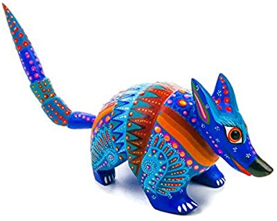
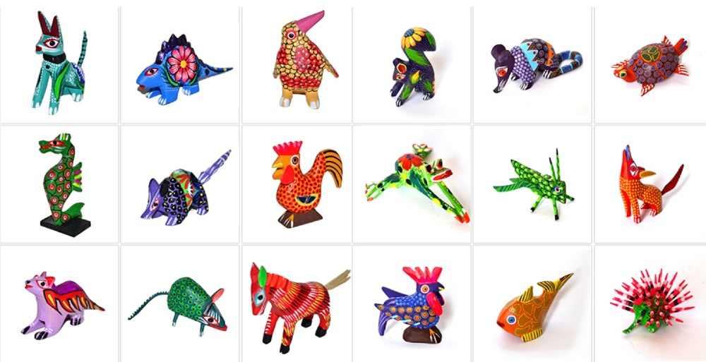
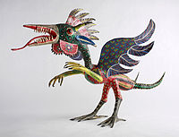
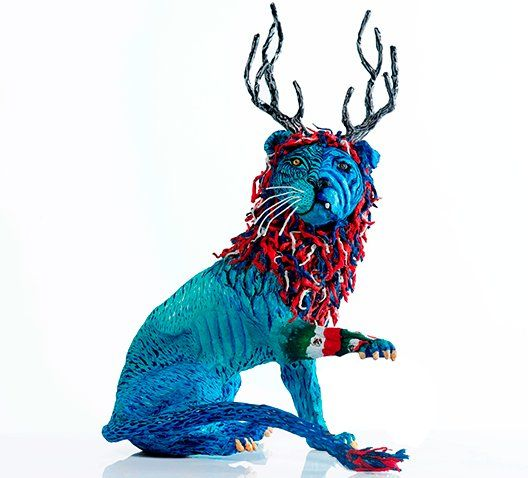

| ¿Qué es esto? | Acerca de | Historia | Galería | Referencias |
|

El alebrije es un tipo de artesanía originaria de México. Se trata de artesanías fabricadas con la técnica de la carpintería y de talla en madera de copal que se pintan con colores mayormente alegres y vibrantes. Los alebrijes son seres imaginarios conformados por elementos fisonómicos de animales diferentes, una combinación de varios animales, no solo fantásticos sino también reales que forman un ser alucinante. Evidentemente son seres que viven en la imaginación y su funciòn es la de un guìa espiritual. Cada alebrije es único, y algo que hay que saber, es que uno no escoge su alebrije, el alebrije escoge a su dueño. Color, textura, detalle, imaginación y paciencia, son características de los alebrijes.

OrigenesEn 1936, Pedro Linares López, cartonero de oficio y originario de la Ciudad de México, enfermó, perdió la conciencia y cayó en un profundo sueño, cuando tenía 30 años; el cual, le revelaría unas criaturas extrañas que cambiarían su destino como artesano de La Merced. Se dice que, en cama e inconsciente, Pedro soñaba con un lugar extraño e interesante, muy apacible, algo así como un bosque en el que había árboles, rocas y animales; podía ver las nubes y el cielo de aquel mágico escenario. Él sentía que todo estaba en calma, no experimentaba dolor alguno y era feliz por estar caminando en ese lugar; sin embargo, de repente,los animales se convirtieron en criaturas extrañas; se trataba de animales que no podía distinguir porque eran de una naturaleza muy rara. Don Pedro vio un burro con alas, un gallo con cuernos de toro, un león con cabeza de perro. Todos esos animales gritaban al unísono una sola palabra: ¡Alebrijes! Gritaban más y más fuerte: ¡Alebrijes, alebrijes, alebrijes! Pedro siguió su camino en aquel fantástico sueño y mientras recorría un sendero de piedras vio a un hombre que caminaba tranquilamente y le pidió ayuda para salir de aquel lugar. El hombre le respondió que él no debía estar allí todavía y que tenía que seguir andando pues a unos cuantos metros había una salida. Pedro corrió y corrió hasta que quedó frente a una ventana estrecha por la que apenas pudo escabullirse, momento en el que despertó. Pedro estaba totalmente recuperado y ya a partir de entonces empezó a recordar su sueño. Quería que su familia y todas las personas conocieran a esos animales fantásticos. Entonces, aprovechando su habilidad de cartonero, Pedro Linares tomó un pedazo de papel, moldeó esas figuras, las pintó igual a como estaban en sus sueños y así les dio entidad a los alebrijes. Los alebrijes surgieron en la Ciudad de México, en un taller del Barrio de la Merced, en el año 1936. Pedro Linares, el personaje al que se atribuye la creación de los primeros alebrijes así como la invención del término mismo, era un artesano especializado en la fabricación de piñatas, máscaras de carnaval y figuras de Judas de papel maché que solía vender en mercados como el Mercado de La Merced.678Finalmente, el dueño de una galería de arte de Cuernavaca descubrió su trabajo y así fue como la obra de Linares captó la atención de Diego Rivera y Frida Kahlo, quienes comenzaron a encargar la elaboración de más alebrijes. |
Esta página se hizo solo con fines educativosHola profe xdLas imágenes utilizadas pertenecen a sus respectivos creadores, en caso de algún problema, mande un mensaje al siguiente correo: ejemplo@ayuda.com |